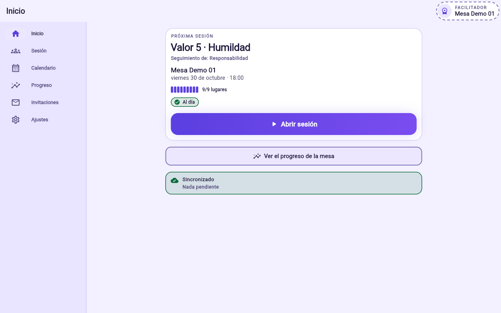
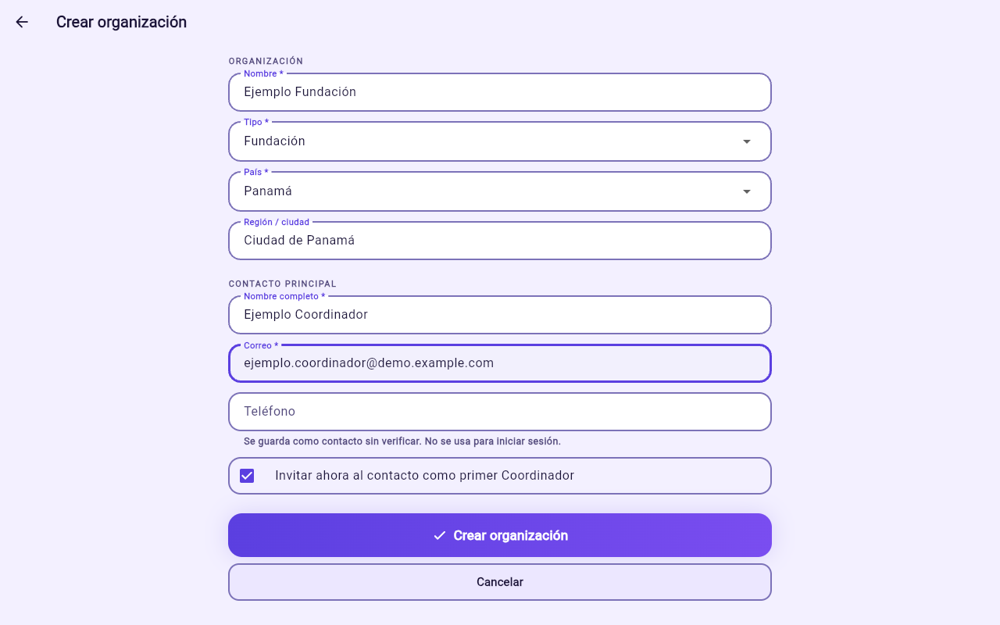
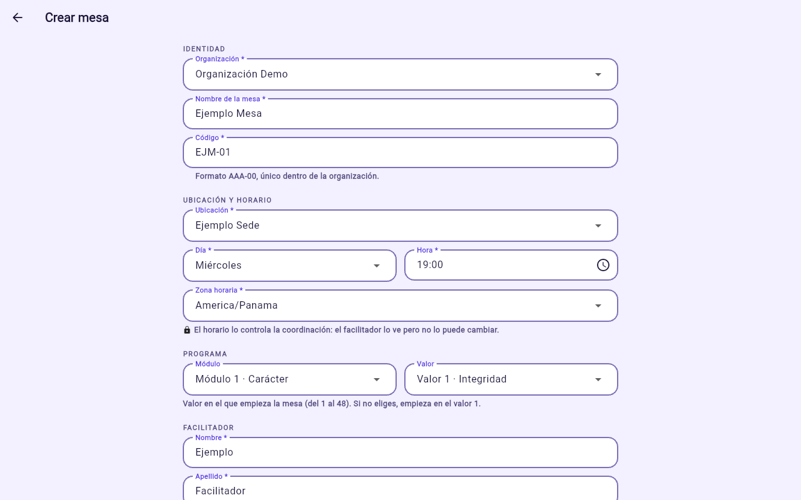
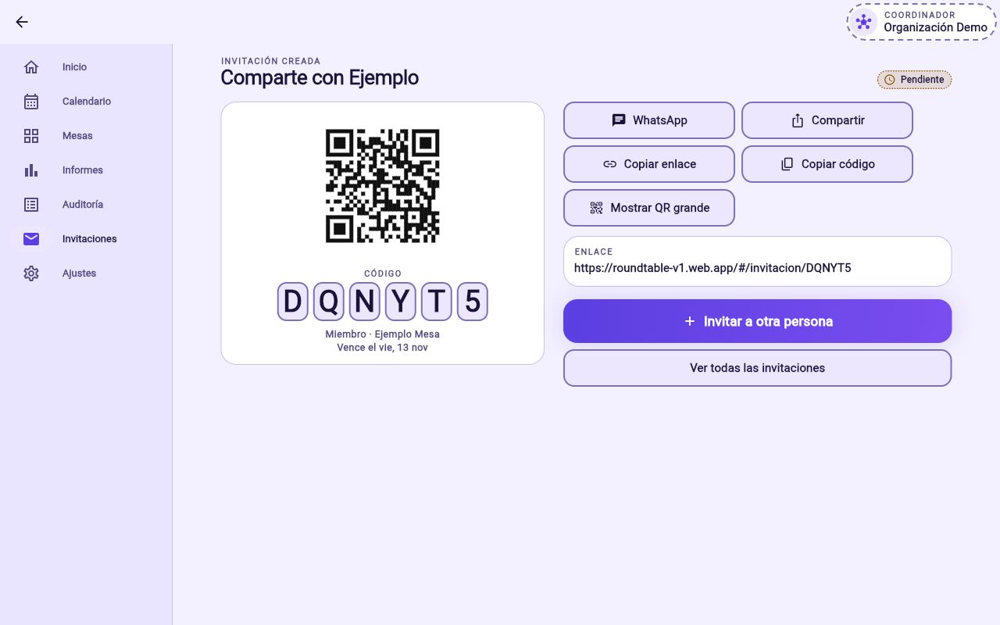
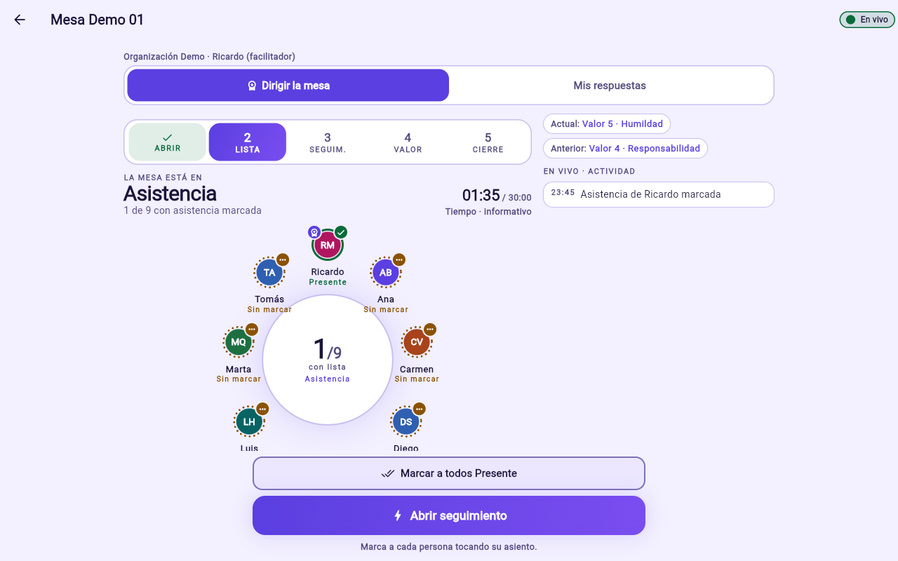

Mesas de valores · Iglesia Casa del Altísimo
Cada semana, un valor.
Cada mesa, en un solo lugar.
Gold Roundtables organiza las mesas semanales: crea organizaciones y mesas, invita personas por WhatsApp, dirige la sesión en vivo y sigue el progreso de cada valor.
Se entra con correo y contraseña. Funciona en computadora y teléfono, sin instalar nada.

Cómo funciona
Una organización en marcha en cuatro pasos
El administrador prepara la estructura; cada rol se encarga de su parte.

Roles
Cuatro roles, una sola cuenta
Una persona puede tener varios roles y cambiar entre ellos con el chip «Estás como …» de la parte superior.
Administrador
Toda la plataforma. Crea organizaciones, mesas e invita a cualquier rol. Ve Informes, Auditoría y el Currículo.
Ver guías →Coordinador
Su organización. Crea sedes y mesas, invita facilitadores y miembros, mueve personas y reprograma sesiones.
Ver guías →Facilitador
Su mesa. Dirige la sesión semanal, responde como uno más e invita miembros a su mesa.
Ver guías →Miembro
Participa desde su teléfono: seguimiento, reflexión, puntaje y compromiso. Ve su propio progreso.
Ver guías →| Invita → | Coordinador | Facilitador | Miembro |
|---|---|---|---|
| Administrador | Sí | Sí | Sí |
| Coordinador | No | En su organización | En su organización |
| Facilitador | No | No | Solo a su mesa |
| Miembro | No | No | No |
Guías paso a paso
Toca una guía para ver los pasos. Los nombres en negrita son los botones tal como aparecen en la aplicación.
Cuenta y acceso
Crear una cuenta y entrar
- Abre roundtable-v1.web.app.
- Toca «¿Primera vez? Crear cuenta», escribe tu correo y una contraseña de al menos 8 caracteres dos veces, y toca «Crear cuenta».
- Las próximas veces: escribe Correo y Contraseña y toca «Entrar».
Una cuenta nueva no ve nada hasta aceptar una invitación: verás «Todavía no tienes un rol asignado».
Unirte con tu invitación (código, enlace o QR)
- Primero crea tu cuenta o entra, con el mismo correo con el que te invitaron.
- Toca «Tengo un código de invitación» y escribe los 6 caracteres; o, ya con la sesión iniciada, abre el enlace que te enviaron.
- Revisa la organización, la mesa y el rol, y toca «Unirme como …».
- Confirma tus datos con «Confirmar y entrar» y luego «Entrar a mi mesa».
Si abres el enlace sin haber entrado verás botones de Google, Apple y Facebook: hoy no están habilitados. Entra con correo y contraseña y vuelve a abrir el enlace.
Olvidé mi contraseña
- En la pantalla de entrada toca «¿Olvidaste tu contraseña?», escribe tu correo y toca «Enviar enlace».
- Abre el enlace del correo en el mismo navegador.
- Escribe la contraseña nueva dos veces y toca «Guardar contraseña».
Cambiar de rol o de mesa
Toca el chip «Estás como …» arriba a la derecha y elige otro contexto. Las pestañas cambian según el rol activo.
Administración
Crear una organización Administrador
- Pestaña Mesas → «Crear» → «Crear organización» (o Ctrl/⌘+K).
- Llena Nombre, Tipo, País y, si quieres, Región / ciudad.
- En Contacto principal escribe nombre completo, correo y teléfono con código de país.
- Deja marcada «Invitar ahora al contacto como primer Coordinador» y toca «Crear organización».
- Se abre la invitación del coordinador: toca «Compartir» (en el teléfono puedes elegir WhatsApp) o «Copiar enlace». También puedes enviarla después desde Invitaciones → Compartir, que tiene el botón WhatsApp.
Crear una sede (ubicación) Admin · Coordinador
- Abre la ficha de la organización y, en Ubicaciones, toca «Nueva ubicación».
- Escribe el nombre (por ejemplo «Sede Central») y, si quieres, ciudad, región y dirección.
- Toca «Crear ubicación». Sin ubicaciones no se pueden crear mesas.
Crear una mesa e invitar a su facilitador Admin · Coordinador
- Pestaña Mesas → «Crear» → «Crear mesa».
- Elige la organización; escribe el Nombre y un Código único (por ejemplo
LUZ-07). - Elige Ubicación, Día, Hora y Zona horaria, y el valor con el que empieza (si no, el 1).
- En Facilitador elige una persona existente o toca «Invitar a un facilitador nuevo» y escribe sus datos.
- Toca «Crear mesa». La primera sesión se programa sola.

Editar horario, pausar o cerrar una mesa
- Abre la ficha de la mesa y toca «Editar horario».
- Cambia día, hora, zona horaria o valor. Con «Vigente desde» el cambio aplica desde una fecha futura.
- Para pausar o cerrar, cambia el Estado a Pausada o Cerrada y toca «Guardar cambios».
Reprogramar, cancelar o agregar una sesión
En la ficha de la mesa, tarjeta Próxima sesión:
- Reprogramar: mueve solo esa sesión.
- Cancelar sesión: no se hace y el valor no avanza.
- Sesión extraordinaria: reunión adicional antes de la próxima; el programa avanza.
Invitar personas
Invitar un coordinador Administrador
- Al crear la organización, deja marcada la casilla del primer coordinador; o en la ficha de la organización toca «Invitar coordinador».
- También: Invitaciones → «Invitar» → rol Coordinador → elige la organización.
- Toca «Crear invitación» y envíala por WhatsApp.
Invitar un facilitador Admin · Coordinador
- Lo normal: al crear la mesa, con «Invitar a un facilitador nuevo».
- Si la mesa ya existe y no tiene facilitador: Invitaciones → «Invitar» → rol Facilitador → mesa.
- Si ya tiene uno, usa «Cambiar facilitador» en la ficha de la mesa.
Invitar un miembro Admin · Coordinador · Facilitador
- Invitaciones → «Invitar».
- Escribe Nombre, Apellido, Correo y Teléfono con código de país.
- Rol Miembro y la Mesa (el facilitador ya tiene la suya elegida). Revisa que queden lugares.
- Toca «Crear invitación» y luego WhatsApp, Copiar enlace o Mostrar QR grande.

Invitar a muchas personas
No hay carga masiva: cada persona necesita su propia invitación porque cada código se usa una sola vez. La forma más rápida:
- Prepara la lista: nombre, apellido, correo, teléfono y mesa.
- Crea la primera invitación y envíala por WhatsApp.
- Toca «Invitar a otra persona» y repite; toma menos de un minuto por persona.
- Reparte: el administrador invita coordinadores, ellos a los facilitadores y cada facilitador a su mesa.
Máximo 9 personas por mesa contando al facilitador. Cada invitación pendiente reserva un lugar.
Renovar, revocar y seguir invitaciones
- Pestaña Invitaciones: filtra por Pendiente, Aceptada, Vencida o Revocada.
- Renovar crea un código nuevo con 14 días más; Revocar anula el código y libera el lugar.
- En computadora puedes marcar varias filas y renovarlas o revocarlas juntas.
Mover, desactivar o reactivar personas Admin · Coordinador
- Mover: en la ficha de la mesa, ícono «Mover a …», elige la mesa de destino. El historial viaja con la persona.
- Desactivar en la mesa: libera su lugar; sus respuestas se conservan.
- Desactivar persona: en su ficha; termina sus lugares, roles e invitaciones. Reactivar la habilita de nuevo.
La sesión semanal
Dirigir la sesión Facilitador
- Desde Inicio o la pestaña Sesión toca «Abrir sesión» (se puede desde 12 horas antes).
- Lista: toca cada asiento y marca Presente, Tarde, Justificado o Ausente, o «Marcar a todos Presente». Toca «Abrir seguimiento».
- Seguimiento: cada uno revisa su compromiso anterior. Toca «Abrir valor actual».
- Valor actual: todos reflexionan, se califican y escriben su compromiso. Responde tú también y toca «Cerrar respuestas».
- Cierre: toca «Cerrar sesión». La mesa avanza al valor siguiente.

Participar en la sesión Miembro
- Abre la pestaña Sesión y espera a que tu facilitador abra la mesa.
- Seguimiento: «¿Cómo te fue?», tu puntaje de hoy y «Enviar seguimiento».
- Reflexión: responde las preguntas, elige tu puntaje (1–10, sin el 5) y «Enviar y seguir al compromiso».
- Compromiso: qué harás, cuándo y cómo lo medirás; «Enviar mi compromiso».
Se necesita internet. Sin conexión verás «No hay conexión con el servidor»: lo escrito se queda en pantalla y debes volver a enviarlo.
Informes y control
Leer los Informes Admin · Coordinador
- Valores completados: valores cerrados por las mesas (de 48).
- Mejora estimada: puntaje de seguimiento menos el inicial.
- Asistencia: presentes y tardíos; alerta bajo 70 %.
- Mesas: activas, retrasadas e inactivas.
Filtra por período, organización, mesa o facilitador y exporta a CSV.
Auditoría y Currículo
- Auditoría: registro de solo lectura de todo lo que pasa, incluidas las consultas de respuestas individuales.
- Currículo (solo administrador): módulos, valores y preguntas; se editan o se suben desde un archivo .json o .csv.
Preguntas frecuentes
Lo que más se pregunta
¿Por qué no puedo elegir el 5?
Es una regla del programa para evitar respuestas neutras: el puntaje es de 1 a 10 sin el 5.
Mi invitación venció.
Dura 14 días. Pide a quien te invitó que la renueve: recibirás un código nuevo.
La mesa está llena (9/9).
Mueve o desactiva a alguien, revoca una invitación pendiente o elige otra mesa.
¿Quién ve mis respuestas?
Tu facilitador, tu coordinador y la administración. Cada consulta queda registrada en la Auditoría.
Me marcaron Ausente, pero participé.
Si respondes en la sesión, pasas automáticamente a Presente.
¿Funciona sin internet?
No. Hoy la aplicación funciona solo en línea; confirma la conexión antes de la sesión.
Todo listo para tu mesa
Entra con tu correo y contraseña, o descarga el manual completo para tenerlo a mano.